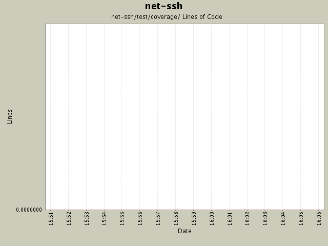

Module net-ssh/test/coverage/
back to main page
Summary Period:
2004-11-22 to
2004-11-22
Modules
[root]/net-ssh/test/coverage
Lines of Code

Total Lines Of Code:
0 (2005-01-07 15:12)
Authors
| Author |
Changes |
Lines of Code |
Lines per Change |
| minam |
130 (100.0%) |
0 (-) |
0.0 |
Most Recent Commits
-
minam
2004-11-22 16:05
-
0 lines of code changed in:
-
net-ssh/test/coverage:
_-ALL-TESTS_rb.html (del),
__-lib-net-ssh-connection-channel_rb.html (del),
__-lib-net-ssh-connection-constants_rb.html (del),
__-lib-net-ssh-connection-driver_rb.html (del),
__-lib-net-ssh-connection-services_rb.html (del),
__-lib-net-ssh-errors_rb.html (del),
__-lib-net-ssh-proxy-errors_rb.html (del),
__-lib-net-ssh-proxy-http_rb.html (del),
__-lib-net-ssh-proxy-socks4_rb.html (del),
__-lib-net-ssh-proxy-socks5_rb.html (del),
__-lib-net-ssh-service-forward-driver_rb.html (del),
__-lib-net-ssh-service-forward-local-network-handler_rb.html (del),
__-lib-net-ssh-service-forward-remote-network-handler_rb.html (del),
__-lib-net-ssh-service-forward-services_rb.html (del),
__-lib-net-ssh-service-process-driver_rb.html (del),
__-lib-net-ssh-service-process-open_rb.html (del),
__-lib-net-ssh-service-process-popen3_rb.html (del),
__-lib-net-ssh-service-process-services_rb.html (del),
__-lib-net-ssh-service-services_rb.html (del),
__-lib-net-ssh-session_rb.html (del),
__-lib-net-ssh-transport-algorithm-negotiator_rb.html (del),
__-lib-net-ssh-transport-compress-compressor_rb.html (del),
__-lib-net-ssh-transport-compress-decompressor_rb.html (del),
__-lib-net-ssh-transport-compress-none-compressor_rb.html (del),
__-lib-net-ssh-transport-compress-none-decompressor_rb.html (del),
__-lib-net-ssh-transport-compress-services_rb.html (del),
__-lib-net-ssh-transport-compress-zlib-compressor_rb.html (del),
__-lib-net-ssh-transport-compress-zlib-decompressor_rb.html (del),
__-lib-net-ssh-transport-constants_rb.html (del),
__-lib-net-ssh-transport-errors_rb.html (del),
__-lib-net-ssh-transport-identity-cipher_rb.html (del),
__-lib-net-ssh-transport-kex-dh-gex_rb.html (del),
__-lib-net-ssh-transport-kex-dh_rb.html (del),
__-lib-net-ssh-transport-kex-services_rb.html (del),
__-lib-net-ssh-transport-ossl-buffer-factory_rb.html (del),
__-lib-net-ssh-transport-ossl-buffer_rb.html (del),
__-lib-net-ssh-transport-ossl-cipher-factory_rb.html (del),
__-lib-net-ssh-transport-ossl-digest-factory_rb.html (del),
__-lib-net-ssh-transport-ossl-hmac-factory_rb.html (del),
__-lib-net-ssh-transport-ossl-hmac-hmac_rb.html (del),
__-lib-net-ssh-transport-ossl-hmac-md5-96_rb.html (del),
__-lib-net-ssh-transport-ossl-hmac-md5_rb.html (del),
__-lib-net-ssh-transport-ossl-hmac-none_rb.html (del),
__-lib-net-ssh-transport-ossl-hmac-services_rb.html (del),
__-lib-net-ssh-transport-ossl-hmac-sha1-96_rb.html (del),
__-lib-net-ssh-transport-ossl-hmac-sha1_rb.html (del),
__-lib-net-ssh-transport-ossl-key-factory_rb.html (del),
__-lib-net-ssh-transport-ossl-services_rb.html (del),
__-lib-net-ssh-transport-packet-stream_rb.html (del),
__-lib-net-ssh-transport-services_rb.html (del),
__-lib-net-ssh-transport-session_rb.html (del),
__-lib-net-ssh-transport-version-negotiator_rb.html (del),
__-lib-net-ssh-userauth-agent_rb.html (del),
__-lib-net-ssh-userauth-constants_rb.html (del),
__-lib-net-ssh-userauth-driver_rb.html (del),
__-lib-net-ssh-userauth-methods-hostbased_rb.html (del),
__-lib-net-ssh-userauth-methods-password_rb.html (del),
__-lib-net-ssh-userauth-methods-publickey_rb.html (del),
__-lib-net-ssh-userauth-methods-services_rb.html (del),
__-lib-net-ssh-userauth-services_rb.html (del),
__-lib-net-ssh-userauth-userkeys_rb.html (del),
__-lib-net-ssh-util-buffer_rb.html (del),
__-lib-net-ssh-util-openssl_rb.html (del),
__-lib-net-ssh-version_rb.html (del),
index.html (del)
-
minam
2004-11-22 15:52
-
0 lines of code changed in:
-
net-ssh/test/coverage:
_-ALL-TESTS_rb.html (new),
__-lib-net-ssh-connection-channel_rb.html (new),
__-lib-net-ssh-connection-constants_rb.html (new),
__-lib-net-ssh-connection-driver_rb.html (new),
__-lib-net-ssh-connection-services_rb.html (new),
__-lib-net-ssh-errors_rb.html (new),
__-lib-net-ssh-proxy-errors_rb.html (new),
__-lib-net-ssh-proxy-http_rb.html (new),
__-lib-net-ssh-proxy-socks4_rb.html (new),
__-lib-net-ssh-proxy-socks5_rb.html (new),
__-lib-net-ssh-service-forward-driver_rb.html (new),
__-lib-net-ssh-service-forward-local-network-handler_rb.html (new),
__-lib-net-ssh-service-forward-remote-network-handler_rb.html (new),
__-lib-net-ssh-service-forward-services_rb.html (new),
__-lib-net-ssh-service-process-driver_rb.html (new),
__-lib-net-ssh-service-process-open_rb.html (new),
__-lib-net-ssh-service-process-popen3_rb.html (new),
__-lib-net-ssh-service-process-services_rb.html (new),
__-lib-net-ssh-service-services_rb.html (new),
__-lib-net-ssh-session_rb.html (new),
__-lib-net-ssh-transport-algorithm-negotiator_rb.html (new),
__-lib-net-ssh-transport-compress-compressor_rb.html (new),
__-lib-net-ssh-transport-compress-decompressor_rb.html (new),
__-lib-net-ssh-transport-compress-none-compressor_rb.html (new),
__-lib-net-ssh-transport-compress-none-decompressor_rb.html (new),
__-lib-net-ssh-transport-compress-services_rb.html (new),
__-lib-net-ssh-transport-compress-zlib-compressor_rb.html (new),
__-lib-net-ssh-transport-compress-zlib-decompressor_rb.html (new),
__-lib-net-ssh-transport-constants_rb.html (new),
__-lib-net-ssh-transport-errors_rb.html (new),
__-lib-net-ssh-transport-identity-cipher_rb.html (new),
__-lib-net-ssh-transport-kex-dh-gex_rb.html (new),
__-lib-net-ssh-transport-kex-dh_rb.html (new),
__-lib-net-ssh-transport-kex-services_rb.html (new),
__-lib-net-ssh-transport-ossl-buffer-factory_rb.html (new),
__-lib-net-ssh-transport-ossl-buffer_rb.html (new),
__-lib-net-ssh-transport-ossl-cipher-factory_rb.html (new),
__-lib-net-ssh-transport-ossl-digest-factory_rb.html (new),
__-lib-net-ssh-transport-ossl-hmac-factory_rb.html (new),
__-lib-net-ssh-transport-ossl-hmac-hmac_rb.html (new),
__-lib-net-ssh-transport-ossl-hmac-md5-96_rb.html (new),
__-lib-net-ssh-transport-ossl-hmac-md5_rb.html (new),
__-lib-net-ssh-transport-ossl-hmac-none_rb.html (new),
__-lib-net-ssh-transport-ossl-hmac-services_rb.html (new),
__-lib-net-ssh-transport-ossl-hmac-sha1-96_rb.html (new),
__-lib-net-ssh-transport-ossl-hmac-sha1_rb.html (new),
__-lib-net-ssh-transport-ossl-key-factory_rb.html (new),
__-lib-net-ssh-transport-ossl-services_rb.html (new),
__-lib-net-ssh-transport-packet-stream_rb.html (new),
__-lib-net-ssh-transport-services_rb.html (new),
__-lib-net-ssh-transport-session_rb.html (new),
__-lib-net-ssh-transport-version-negotiator_rb.html (new),
__-lib-net-ssh-userauth-agent_rb.html (new),
__-lib-net-ssh-userauth-constants_rb.html (new),
__-lib-net-ssh-userauth-driver_rb.html (new),
__-lib-net-ssh-userauth-methods-hostbased_rb.html (new),
__-lib-net-ssh-userauth-methods-password_rb.html (new),
__-lib-net-ssh-userauth-methods-publickey_rb.html (new),
__-lib-net-ssh-userauth-methods-services_rb.html (new),
__-lib-net-ssh-userauth-services_rb.html (new),
__-lib-net-ssh-userauth-userkeys_rb.html (new),
__-lib-net-ssh-util-buffer_rb.html (new),
__-lib-net-ssh-util-openssl_rb.html (new),
__-lib-net-ssh-version_rb.html (new),
index.html (new)